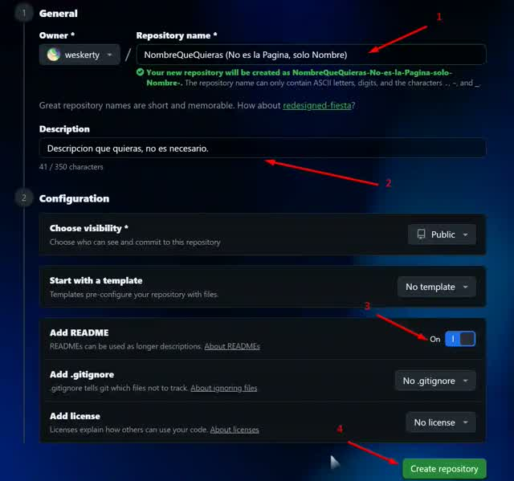
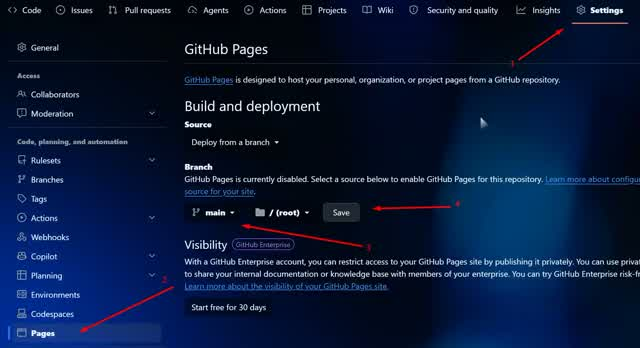
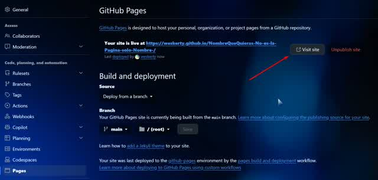

Aqui se te explicara la manera mas facil de como tener tu Pagina Web propia, Similar a esta.
Primero nos creamos una cuenta en GitHub ↗️ o el repo que prefieras.
Una vez hayas creado tu cuenta ve a Crear Nuevo Repositorio, este boton: https://github.com/new
Veras algo como esto:

Luego Activa la Pagina:

Aparecera algo asi arriba:
Esperas unos segundos, luego Recargas la pagina y veras que ya aparece para visitar tu pagina Web

Luego todos podrian entrar desde TU-Usuario.github.io/NombreQuePusiste(si-era-la-pagina-xd)
Se puede cambiar el nombre desde conf y tambien cambia esa URL, pero siempre se queda el TU-Usuario.github.io/ Primero.
El dominio es el www.PalabraQueMeGuste.com
Para poner el que gustes se debe comprar un Dominio. Puedes comprar uno Desde Aqui ↗️
Esa pagina permite comprar incluso tu propio servidor para hostear manualmente tu pagina asi no depender de github ni sus limtes… Pero ahora solo nos interesa el dominio, podes buscar al comprar el plan “solo registrar dominio”. Se paga al registrar y al año para renovacion.
Configurar en Github
Documentacion GitHub de Dominio Personalizado ↗️
Pero GitHub no permite usar la Web para cosas pesadas, ilegalidades, etc. Ademas tiene limite al llegar a $Visitas.
Lo mejor es Vincular a Cloudflare